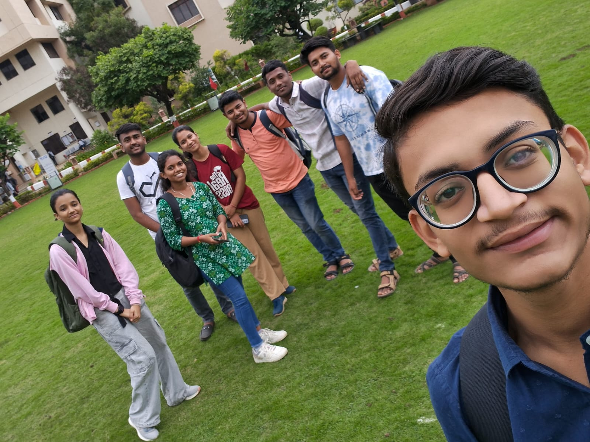
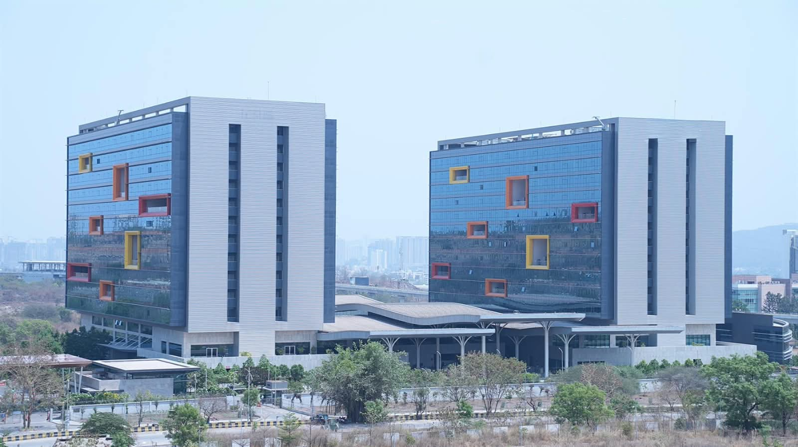

Starting at DYP, Part 2: The First Days
Nervous benches, new friends, a hostel on the 11th floor, and building games for TechFest.
In Part 1, I told you about the lists, the forms and the waiting. This is Part 2: what happened once I finally walked into the campus. 🏫
DAY ONEDay one: the empty classroom 🪑
For the first few days, I was staying at Gaurav Bhaiya’s home, until the college hostel opened. He’s my maternal cousin, a big brother to me.
My first lecture was at 10 AM. I reached 15 minutes early and was looking for the hall when I noticed a girl standing outside our class. I didn’t speak to her, but she looked new too.
I messaged Vinay to ask where he was. He said he was on his way. When I walked into the class, it was completely empty, so I sat on the first bench, alone, while people slowly started coming in. I knew no one. I just waited for the one person who had messaged me on WhatsApp saying he knew me.
After some time, Vinay appeared at the door. He saw me, recognised me, and came to sit with me. He started talking in his Solapuri and Tamil mix of accents, and I didn’t understand a word. He kept going, and I kept nodding so it wouldn’t feel awkward. 😅
THE LECTUREThe Bubble Sort moment 🙋
The first lecture was DSA, a subject I was already pretty comfortable with. Sorting algorithms were being covered. I don’t remember exactly, but Pallavi Ma’am was explaining Bubble Sort, and when she wrote the code on the board, I noticed a mistake. I stood up and pointed it out.
Everyone was fascinated. And for a moment, I felt pretty special too.
Vinay already had a friend, Sharayu, sitting on the next bench. When the lectures ended, everyone went for lunch. Sharayu already knew the other DSY students, because she’d been coming to college since the previous week. The three of us who were new were Vinay, me and Harshada Bhoir, the girl I’d seen outside the class.
THE TABLELunch at the mess, and who’s who 🍛
That day, we all went to a nearby mess and introduced ourselves. The group was Deep, Harshada Khajure, Pranav, Mahesh, Sharayu, Harshada Bhoir, Vinay and me.
Honestly, remembering so many names in a single day was tough. I’d also never expected to talk to so many people on the first day, going by my experience of the first day of diploma.
Here’s a quick guide, because you’ll meet most of them again:
- Vinay The unknown number from Part 1. From Government Polytechnic Solapur.
- Sharayu Vinay’s friend, also from Government Polytechnic Solapur.
- Harshada Bhoir From Government Polytechnic Pune.
- Deep and Harshada Khajure Diploma mates from JSPM Hadapsar.
- Pranav From Ramchandra, a college on the outskirts of Pune.
- Mahesh From Bharati Vidyapeeth.
- Me From my hometown polytechnic, along with Diksha, the one whose face I’d been dreading.
Vinay, Sharayu, Mahesh, Pranav and Harshada, five of the people at that very table, would later become my SIH team. That’s a story for another post, and it’s a long one. (It’s here: The Hackathon That Taught Me How Hard It Is to Lead Friends.)

THE CLICKMonika, again 💡
Vinay and Sharayu were from Government Polytechnic Solapur, so they were diploma mates, just like Diksha and me. During the introductions, Deep and Harshada Khajure said they were also from the same diploma college, JSPM Hadapsar.
My mind clicked. Remember Monika, the girl from JSPM in Part 1?
I immediately asked Deep: “Do you know Monika?”
He was surprised. “Hey Harshada, look, this guy knows Monika!” I explained that I didn’t actually know her. It was a bit of research I’d done while finalising colleges for my friends Pranjal and Gautami. When I told them the whole case, Harshada said: “Bro, why didn’t you meet me before? I needed to change college too.”
I felt good hearing that.
I confirmed with them that Monika was taking admission at AISSMS and wasn’t going for the next round. So it was clear: Gautami and Pranjal had no chance of coming together anymore, and they had to accept that reality. That evening, I called them and told them.
THE LABEL“You know, Yash is a game developer” 🎮
Back at lunch, we were getting to know each other. Everyone was asking about hobbies and what we do. Out of nowhere, Sharayu said: “You know, Yash is a game developer.”
I was surprised. I hadn’t told even Vinay that. Maybe she’d seen my WhatsApp profile picture, which was a gamer logo.
Then everyone shared their backgrounds. Harshada Bhoir was from Government Polytechnic Pune, and I found it fascinating, because that college is so well-known. Pranav said he was from Ramchandra, on the outskirts of Pune. And Mahesh said he was from Bharati Vidyapeeth, a famous college in Pune, and that he’d done an internship in Game Development during diploma.
I thought: “There are better players than me here…”
I’d find out later how true that was. 😉
All of this was new to me, because honestly, I’d never interacted with girls like this on a first day 😁😅. The only girls I’d talked to were Pranjal and Gautami. Everyone else was just a classmate: a little conversation here and there, nothing much.
Slowly, our bonds tied together. Friendships grew stronger. There were some mismatches, some conflicts, some laughter, some tears, and much more. I didn’t even get the time to notice how it all happened so quickly, and yet so beautifully.
THE MOVEGaurav Bhaiya’s home, then Hinjewadi 🏠
I stayed at Gaurav Bhaiya’s home for around 15 to 20 days at most. My routine was simple: go to college in the morning, eat at the mess with friends, attend lectures, go back home, hop on conference calls with a few friends, and sleep. That was almost all.
Then I shifted to Hinjewadi, because the hostel building wasn’t open yet, and the college had made temporary arrangements there. It was 15 km from college. A bus was provided, but it left very early, between 7:30 and 8:30, while my college started at 10. So I sometimes just went by bike. The return bus was at 6, but college sometimes ended at 4. Some days I had to adjust like that.
At the hostel, everyone was my junior. There was no one from the second year or from other departments, so I felt a little lonely. My roommates, Kshitij and Mayuresh, were only 15, first-year diploma students, four years younger than me, though they looked big in height and build.
THE KEYSThe 11th-floor Spiderman 🕷️
The day I reached the hostel, I was given my room keys only for a short time, because my roommates had already caused an incident the day before I arrived.
Kshitij had left the keys inside and locked the door from outside, and then couldn’t get in. They had to hire a person to climb from another room’s washroom window to ours, on the 11th floor, walking over just a slab, like Spiderman, to open the door. They paid him ₹500 for the favour.
It was insane. 😳
THE CLUBGDGC: the club I almost didn’t join 💻
At our college, there was a club called GDGC (Google Developer Group on Campus), running an open recruitment drive. We all applied in different domains: Vinay, Sharayu, Mahesh and Deep in DSA, Harshada Khajure in Android, and me in AIML.
After the online interviews, Harshada, Sharayu, Mahesh and I were selected for the second round. My first interviewer was our AIML senior, Atharva Darpude, who really liked my portfolio site.
In the second round, the interviewer was Ganesh, a friend of Pranav Patil, so I mentioned Pranav to let him know a little about me before the interview. But Ganesh had already made up his mind that he didn’t need a game developer, and was going to pick one from the other two shortlisted candidates.
I’d chatted with both of them before the interviews. Vishesh from ENTC knew AI from online courses and impressed me. Prajwal from AIDS C Division seemed chill, but didn’t know much. He was going only by one face detection project in Python.
I was the last candidate. I could answer every question, but I couldn’t show my AI work, because my projects weren’t online and I didn’t have my laptop with me. (Even if I had, it wouldn’t have opened. It has no battery.)
Ganesh told me they’d go with one of the other two, that I was really good, and that if they had a game developer role, they’d have taken me.
I was a little sad inside, but I showed a positive face. I even suggested they select Vishesh, because, after my discussion with him, he had better knowledge.
And then Ganesh said:
We’re making a few games for TechFest, a college event. It would be great if you could help us build them. We’ll give you our web development team. — Ganesh
I said: “Yes, of course. I’d be more than happy for this opportunity.”
So he added me as a volunteer.
Sharayu was selected as one of two DSA coordinators, and Harshada as the Android coordinator, so three of our group members were in GDGC. Vinay, Mahesh and Deep didn’t make it in. That felt pretty cool at the time.
THE GAMEBuilding a game for TechFest 🏃
We were busy preparing GDGC’s games for TechFest. Ganesh proposed an endless runner idea, like Temple Run, with a Stranger Things vibe. I built a prototype in two or three days and showed him, and he was impressed. I was given Tejas and Meghasham, web coordinators at GDGC and second-year IT students, to work with.
They both helped, but mostly it was Tejas and me, sitting for long hours working on it. It was a Three.js game that runs in the browser: a 3D typing runner.
We were also asked to make it multiplayer, and Sankalp, the web lead at GDGC, gave us socket code to connect multiplayer sessions. I’d never built a multiplayer game before. I’d built the single-player version, but struggled with multiplayer. Tejas got a small multiplayer prototype running, but the code had been written by AI, and I didn’t understand what needed fixing for it to run as expected. I tried for a few days, but with the deadline close, we dropped the multiplayer idea and shipped the single-player game.
During that time, Tejas and I built a good friendship. He was my only friend outside our class. I even visited his flat for some work, and we had dinner together at a nearby restaurant.
Most of my time was going into college and TechFest preparation, from decoration to game building. I rode my bike to college every day, 30 km of daily travel. My roommates were amazed, and I flexed on them that I was part of GDGC. 😎
THE DELAYThe TechFest that wasn’t 😶
Then Tejas caught a cold and fever, went to the hospital, and said he wouldn’t be able to come to TechFest. That was one day before the event.
We were already late. We’d set up a whole classroom with our games, and still two weren’t ready: the runner game, and a puzzle game made by Harshada and Sharayu.
That day, at 3 to 4 PM, we learned that TechFest was postponed to the next semester. Everyone was shocked. All our effort on decoration and everything else was wasted. Somehow, we stored all the props and items in a safe place (which we later couldn’t find).
I was a little sad. But I was also relieved, because now I had time to build the game better.
THE WEEKENDSWeekends, a movie and a very big mall 🛍️
In Hinjewadi, I sometimes didn’t like the lunch and dinner at the mess, so I went to nearby restaurants alone, looking for something to eat.
Every Saturday and Sunday, I went to meet Anand, and sometimes Pranjal or Gautami, because they were the only three from our circle admitted in Pune at that time. I even took Anand to my room once, and Vinay once.
The flat had an oven, an induction stove, a fridge, a TV, an AC and what not. It was Zolo’s rooms, arranged for us temporarily until our hostel building opened, so we had many facilities that normally don’t come with a hostel. Honestly, I didn’t use any of them, because I didn’t want to.
THE KNOCKThe movie and the 4 AM knock 🎬
I watched just one movie on that TV, with Vinay, for the sake of using it. We were watching at night, and I’d sneaked Vinay in without permission, so my eyes were always on the door for the warden.
Suddenly, around 4 in the morning, someone knocked. I opened the door, and there was an unknown guy. He looked at me, shook my hand, said, “Sorry bro, I thought this was my room,” and left, shutting the door.
Vinay and I laughed about that for ages. 😂
THE MALLThe glass door that fooled us 🚪
Vinay and I also explored the areas around Hinjewadi. We went to a mall, a huge one. I’d never been in such a big mall. The floors didn’t end however much we climbed, and every floor had a new theme and style.
There was a clothing store with glass doors, and we spent 5 to 10 minutes looking for its entrance. Then a person walked past the glass wall, and the door opened like magic. I’d only seen automatic doors in Hollywood movies, so we just scratched our heads at our own mistake and how unmodern we were. 😅

THE NIGHTThe IT park at night 🌃
We explored the whole mall, and the IT park too: Wipro, Infosys, TCS and other companies’ giant buildings, with great artwork on them. At night, they were shining, and we kept looking for better buildings all night, until we went back to the room and slept till the next afternoon.
LOOKING BACKLooking back 💭
These were the days of the beginning. These memories come to mind every time I think about that time. Many times I burst out laughing alone, embarrassingly, for no reason, just by thinking about it.
I hope those days come again: days of less tension, more fun, chill gossip, and exploring the unknown outside our comfort zone.
TAKEAWAYSWhat I took from these first days 📌
- Someone has to say hello first. I expected to spend my first day alone on a bench. Instead, one message from a stranger turned into a table of eight.
- A “no” can open a different door. I didn’t get into GDGC as a member, but I got the TechFest games, a good friend, and more experience than a club role would have given.
- Plans fall apart, and that’s okay. TechFest was postponed, and all our decoration was wasted. But I gained time to do it better.
- Small, embarrassing moments become the best memories. A glass door and a 4 AM knock still make me laugh.
— Yash